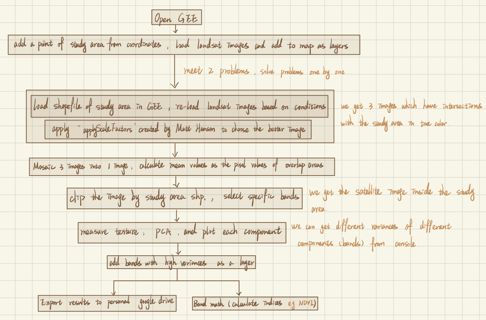
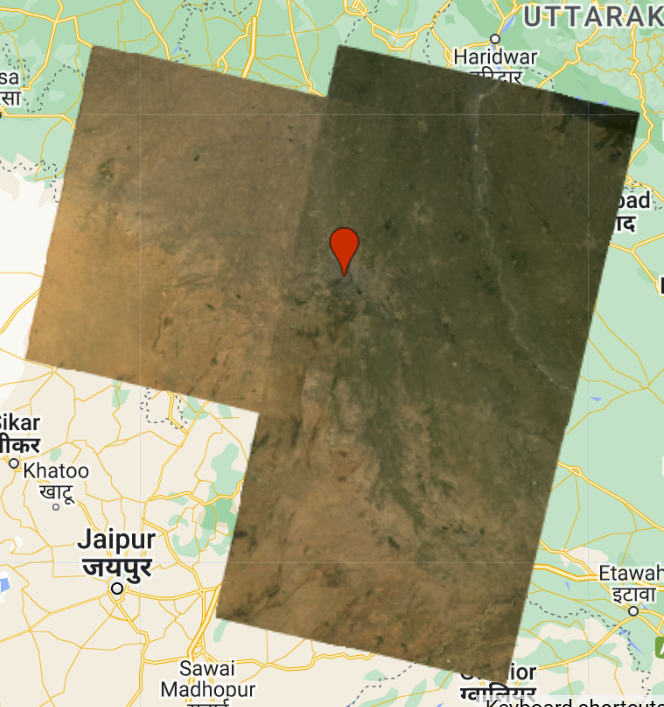
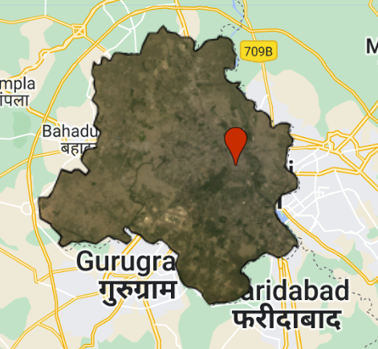
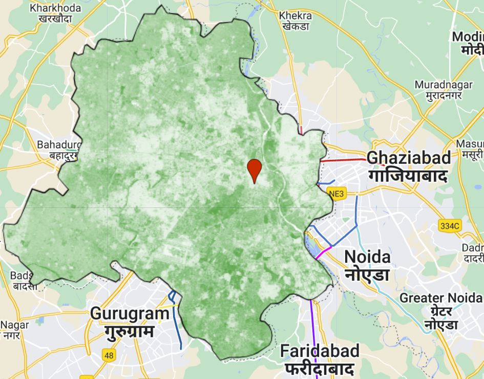

#function applyScaleFactors(image) {
# var opticalBands = image.select('SR_B.').multiply(0.0000275).add(-0.2);
# var thermalBands = image.select('ST_B.*').multiply(0.00341802).add(149.0);
# return image.addBands(opticalBands, null, true)
# .addBands(thermalBands, null, true);
#}Week 5 Google Earth Engine I
Summary
In this week, we focus more on what is Google Earth Engine, and how to use it to solve the real world problems. Meanwhile, we will also summary important points and outputs in this week practical for reviewing.
Google Earth Engine (GEE) introduction
GEE is an online mapping platform which is based on Javascript. With R and QGIS we learnt in CASA0005, and Python we learnt in CASA0013 in the last term, it may be a little easier to understand Javascript after learning and applying them in practice.
GEE has client side and server side, and there are some differences between them that should be noted in practice. For instance, we cannot use loop in the server side, but we can use mapping function in the server side. That is because that the data, including shapefile, table, and other types of data, that we upload will be stored in client, so that server does not know what objects are used for looping.
Scale in GEE refers to pixel resolution, and it might return different values for the scales based on different specific analysis. What we need to pay more attention is that we need to set scale in the script window in GEE, or else the scale will change every time after we adjust the scale in the map window in GEE.
For projection, GEE sets the default projection coordinate system and converts all data to this coordinate system. In practice, there is an option to import the processed data from GEE into software such as QGIS and convert the coordinate system to the one we need.
GEE in action
There are nine types of object classes in GEE, including Image, ImageCollection, Geometry, Feature, FeatureCollection, Reducer, Join, Array, and Chart. Image, imageCollection, Geometry , Feature, and FeatureCollection are consists of the data sets.
Reducer is more like a “groupby” in terms of functionality, which can aggregate data over time, space and other aspects, and calculate the new values of pixels based on summary statistics, linear regression, and other methods. Usually, we can choose to use median when doing reduce image is good enough, especially doing forest & non-forest, water & non-water (giant difference between two categories). Reducing images by neighbourhoods can help us to see the features which may not be clear on the raw images.
In addition, we can do join and spatial join in GEE as well, which is quite similar as R.
Notice:
- Geometries do not have properties, while features have.
- We need to distinguish the small differences between reducing images by regions and reducing images by region.
- When doing multivariate multiple linear regression, which means that we do linear regression with two dependent variables at the same time, but separately, and make sure to have a constant band.
Summary of practical in this week
This week’s practical is mainly used to familiarize with the basic functions of GEE and to combine these with what we have learnt in class about remote sensing image processing in a practical way. Main workflow of practical in this week shows in the following Figure 1. Our main project is to process remote sensing images and get one image in the target study area. In this practical, we set the study area as Dheli, India.

After we create GEE account and open GEE, we added a point of New Delhi based on the coordinates, and also we loaded Landsat images and added them to map. Then, we chose to load a shapefile document of New Delhi, load Landsat images intersect with the study area, and apply “applyScaleFactors” created by Matt Hanson to choose the better image. “applyScaleFactors” function shows in the following code chunk. Therefore, we got three images which have intersections with the study area in true color.

In the next step, we mosaic three images into one image and calculate mean pixel values as the pixel values of overlapped areas.

After clipped the image by study area shapefile and select specific bands, we got one complete satellite image inside the boundary of study area.

In this case, we can measure texture, do PCA and add bands with high variances as a layer to the map. In real world applications, the results of this step can be used to perform some analysis of New Delhi in GEE or to export this layer for analysis in the softwares, for example to calculate NDVI.
